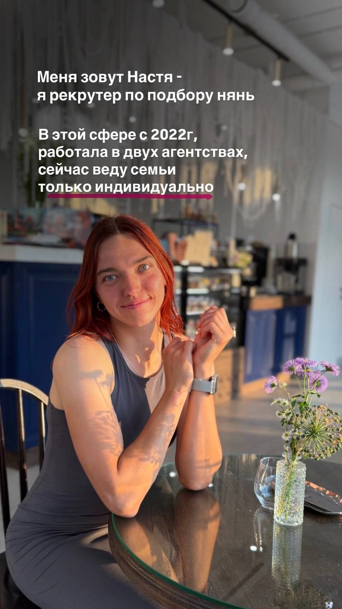

Сравните оформление и выберите вариант. Цвета и шрифты можно переключать сверху.
ВАРИАНТ 01
Текст и форма
Готовы обсудить подбор?
Оставьте контакт для связи. Я уточню задачи семьи и расскажу, как проходит подбор.
Написать в TelegramВАРИАНТ 02
Центральная форма
Готовы обсудить подбор?
Оставьте контакт для связи. Я уточню задачи семьи и расскажу, как проходит подбор.
Написать в TelegramВАРИАНТ 03
Записная книжка
Готовы обсудить подбор?
Оставьте контакт для связи. Я уточню задачи семьи и расскажу, как проходит подбор.
Анастасия
ВАРИАНТ 04
Форма и Telegram
Готовы обсудить подбор?
Оставьте контакт для связи. Я уточню задачи семьи и расскажу, как проходит подбор.
Написать в TelegramМожно сразу написать мне лично.
ВАРИАНТ 05
Карточка с портретом

Готовы обсудить подбор?
Оставьте контакт для связи. Я уточню задачи семьи и расскажу, как проходит подбор.
Написать в Telegram